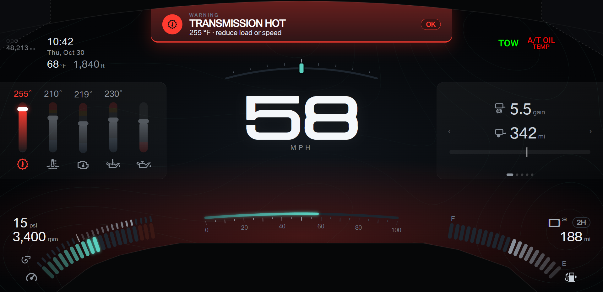
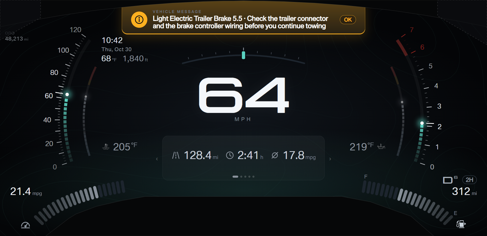
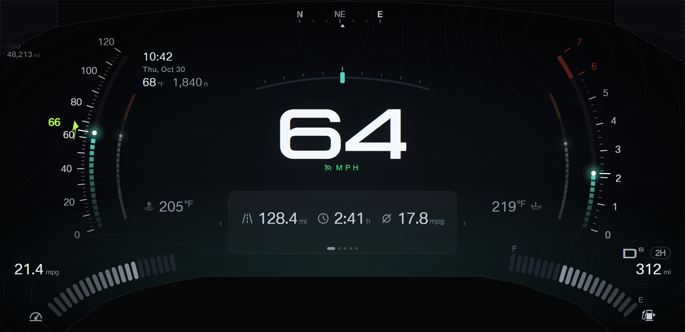
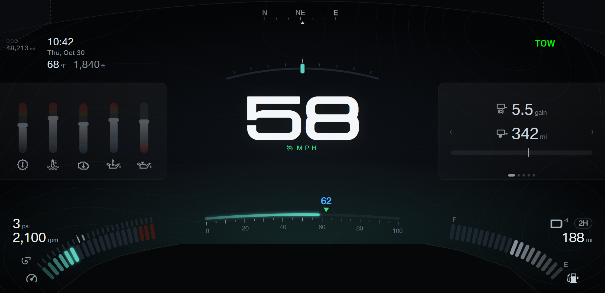
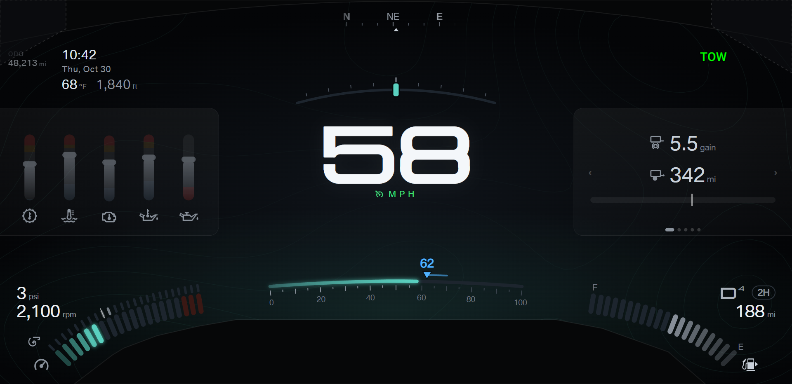
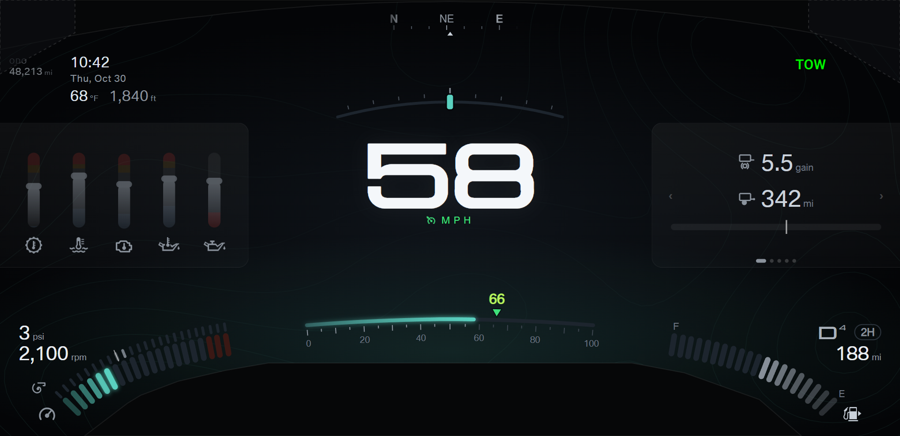
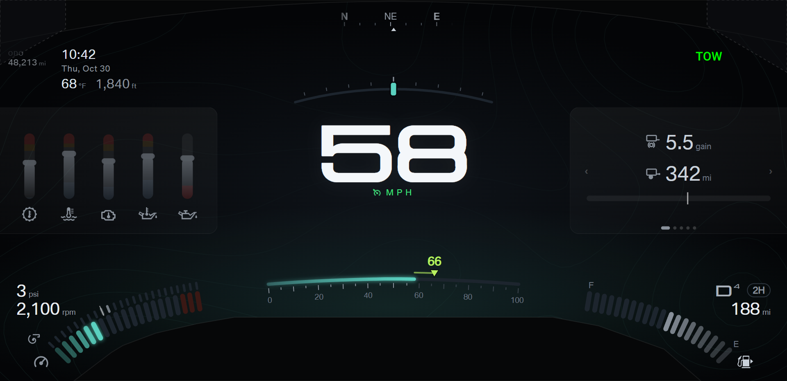

Round 43
Round 44

Round 43 · two-line message

Round 44 · two-line message

Picks from round 43 and the showcase: alert panel A (tinted glass) is locked with the padding fixed. The card jumps stay.
"+N" stays. Every shot passes the margin check (capture.js: 16 shots).


The overspeed warning compares the speed with the "Speed warning at" setting in the menu. The round 42 badge looked like a
road sign, so the badge goes. Both options mark the threshold on the speed scale in red, with the number, only while the speed
is over the threshold. Nothing blinks.
A · Red digits: the speed digits turn red.
B · Red overrun: the digits stay white; the speed scale fills red from the threshold to the speed.
ACC and LIM are not set-speed changes: the adapter reports adaptive cruise (ACC) and a speed limiter (LIM). While the set
speed changes, the temporary number tints by direction: lime up, sky blue down. Held cruise stays green.
A · Number only: the arrow stays green.
B · Number, arrow, and trail: the arrow takes the tint, and a short trail runs from the old set speed to the new one.




